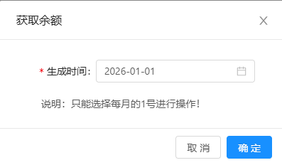

shein/tiktok/temu/aliexpress平台【下载详情】页面均新增【手动同步】按钮，位于批量上传左侧；
1.【手动同步】：点击按钮打开弹窗，其中【生成时间】：默认展示筛选条件所选生成时间的1号，必录日期框精确到天，可参考【amazon/下载详情/获取余额】弹窗样式；
1.1确认后将所选生成时间1号对应【审核状态】=‘待审核’或空的数据行同步FTP账单（先删除后更新）至当前页面，同步失败后，下载详情该数据【下载状态】更新下载失败； --同定时任务同步逻辑；
1.2账单储存成功后此时【下载状态】更新为“下载成功”；【审核状态】更新为“待审核”；
1.3手动同步完成后，需发送企业微信提示，详见https://doc.weixin.qq.com/sheet/e3_AdAAAQZZAPEnpsiK20gSiOVvSflhv?scode=AIAAhQcPAAk4Tdc8AcAdAAAQZZAPE&tab=BB08J2

手动同步
2.四个平台月结账单下载的定时任务均由原先的每月2号起2h/次调整为1天/次，每天09:00执行；(temu自定义账单不调整)